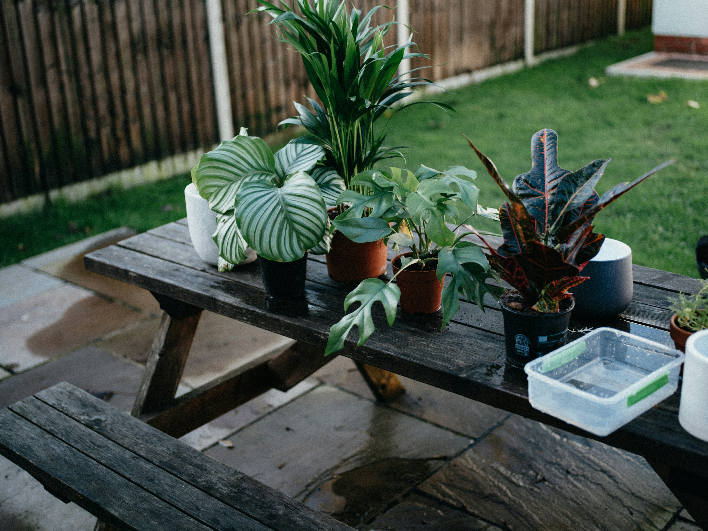
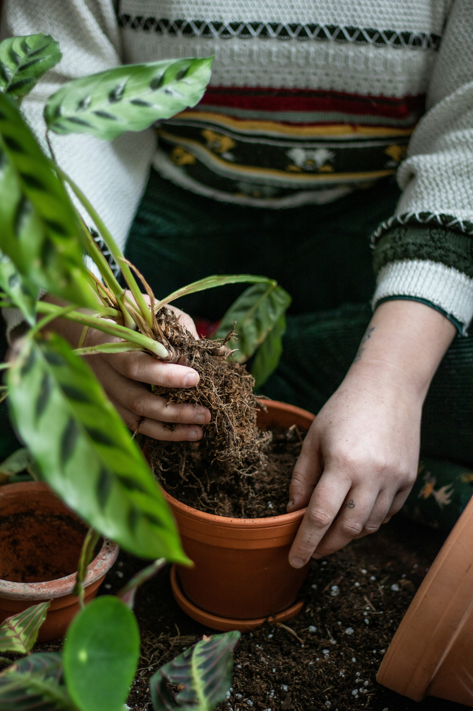

Guides
Make room for more green.
Ideas for bringing plants into the way you actually live — from small spaces and busy routines to beautiful corners worth slowing down for.

Plants + Your Home
Start with the space you already have.
You don't need a sunroom, a plant shelf, or a perfectly styled corner. The best plant setup starts with understanding the rooms you already live in.
Plants for dark apartments
Bring some life into rooms where the sunlight doesn't exactly cooperate.
Plants for tiny spaces
Small plants, narrow shelves, windowsills, and corners that still have room for green.
Plants for tall empty corners
Find ways to fill vertical space without turning your room into a jungle.
Plants for your home office
A little greenery can make a workspace feel more settled and inviting.

Plants + Your Life
Choose plants that fit your rhythm.
Some plants want your attention every few days. Others are perfectly happy being remembered when you walk past them. Your routine matters.
Plants + Style
Make your greenery feel intentional.

How to create a plant corner
Turn an empty little space into something that feels collected rather than crowded.

Mixing tall, trailing & compact plants
Use different shapes and heights to create a fuller display without adding more clutter.

Making a small room feel greener
A few thoughtful placements can make a room feel more alive without taking over the space.
Getting Started
New to plants? Begin here.
You don't need a collection of twenty plants or a cabinet full of supplies. Start small, learn what works, and let your collection grow with you.
Your first five houseplants
A simple starting point for choosing plants with different shapes, habits, and personalities.
What to buy before bringing home a plant
The useful basics — and the things you can probably skip for now.
How to choose a nursery plant
What to look for before you bring a new plant home.
Find your next plant
Your home already has the clues.
Start with the light, space, and routine you already have. We'll help you find plants that make sense for you.
Find My Plant →